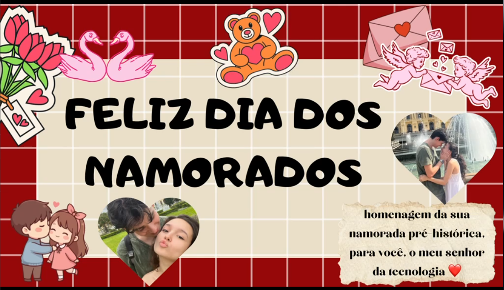

homenagem da sua namorada pré-histórica
FELIZ DIA DOS NAMORADOS
toque para abrir a lembrança

homenagem da sua namorada pré-histórica
toque para abrir a lembrança
Momento 01
homenagem da sua namorada pré-histórica,
para você, o meu senhor
da tecnologia ❤️
Momento 02
Tudo começou graças a uma série de coincidências de duas rotinas, completamente diferentes, que no simples cotidiano decidiram se cruzar. Mas no final tudo isso só deu certo mesmo com muuuuuuitas ajudinhas
Eu no final do segundo ano do Ensino médio, tranquila e desarrumada, saindo com a Lola sempre nos horários mais incertos
Você no seu ano de cursinho. Conciliando estudo, academia e vôlei. Sempre vindo de bicicleta e dependendo dos semáforos para chegar no horário
Momento 03
Lembro como se fosse hoje, dia 3 de dezembro, depois de ver o Sr.Alberto e ter tentado te encontrar em tudo, recebo seu pedido. Demorei um pouco propositalmente e aceitei, na hora você logo mandou um “Opa blz, td bem?”, lembro que achei bem engraçadinho e fiquei animada e até surpresa pela iniciativa assim tão rápida e espontânea.
Lembro também que depois disso não nos desgrudamos mais.
Começamos a contar e conversar sobre absolutamente tudo, ali eu sabia que definitivamente algo muito precioso estava sendo construído.
Você topava de tudo (topa até hoje) para ficar comigo, desde momentos simples, como ficar na banca comigo no frio pois eu precisaria estar lá, até me levar para um encontro propriamente dito. Diziam que iríamos nos enjoar de tanto que ficávamos juntos, mas cá estamos, até hoje sempre colados e juntos. Afinal nossa união começou muito antes de um compromisso pois faz parte de nossa essência
Momento 04
Nossos primeiros encontros já refletiam o casal que seríamos. Repleto de muito companheirismo e amizade.
Sempre nos divertindo e dando risada, afinal nós dois concordamos que a vida é muito curta para não ser devidamente aproveitada e perder tempo com aquilo que não agrega em nada. Sendo exemplo de que um bom amor também é morada de uma grande, forte e fiel amizade
Momento 05
Era um começo de tarde chuvoso de dezembro, nós saímos de casa apenas com a certeza que queríamos nos ver. Sem nenhum plano em mente começamos a pesquisar lugares e decidimos ir em um charmoso cinema de rua. Estava em cartaz uma comédia satírica espanhola e decidimos que poderia ser interessante.
Pagamos por um dos sofás, você tomou um café e eu uma deliciosa limonada, foi o tempo do filme começar. Haviam cinco histórias a serem contadas ao longo do filme, mas me lembro apenas das duas primeiras. Logo na segunda nós estávamos conversando em um momento de afeto. Quando seus braços encontravam os meus e estávamos trocando olhares senti que o seu parecia estranho, depois de alguns segundos, que pareciam durar uma eternidade, você completamente empolgado e aflito me pede em namoro. Começando assim a minha história preferida de amor. Faziam exatos 20 dias que eu te conhecia, mas disse sim com a certeza de uma vida inteira e a cada dia vejo o quão certa foi essa decisão.
Momento 06
Algumas memórias de dias muito especiais
Momento 07
Meu bem!
Espero que tenha gostado dessa pequena lembrança.
Imagino que ela seja a representação perfeita do casal que
somos. Sempre parceiros um do outro e vivendo a alegria e
sorte de termos nos encontrado!
Eu te amo e amo o quanto nos fazemos bem e focamos
sempre em crescer juntos.
FELIZ DIA DOS NAMORADOS, dos infinitos que iremos
comemorar juntos 💌